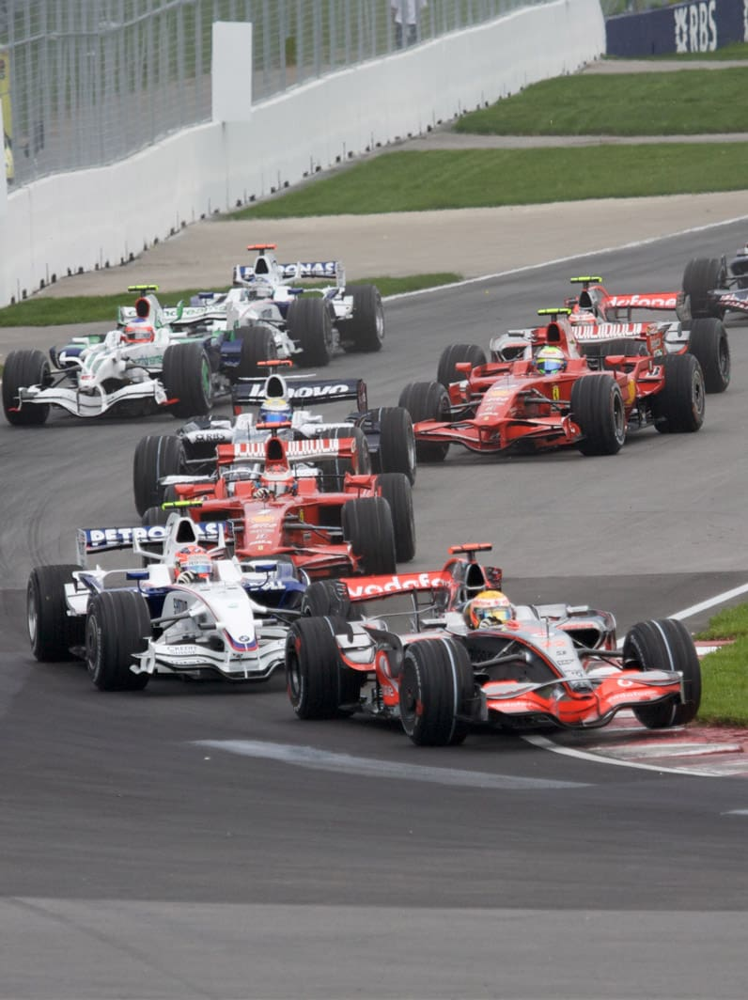
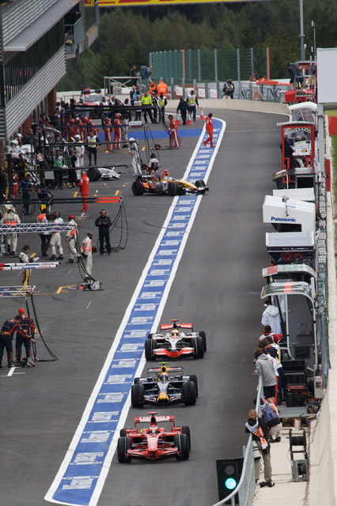
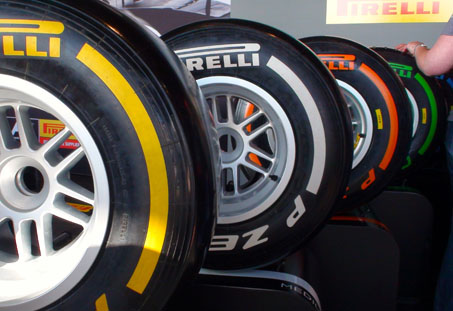

Многие люди смотрят автогонки в классе Формулы 1 несколько лет, но при этом не знают, что именно называется Формулой 1. Чтобы это исправить, нужно разобраться, что же все-таки стоит за этим красивым названием. Дать определение термину «Формула 1» можно в узком и широком смыслах.
В узком смысле, Формула 1 – это свод технических норм, требований и правил, в соответствии с которыми организован и проводится чемпионат мира Формулы 1. Заведует принятием и изменением этих правил Международная Автомобильная Федерация – FIA. Она является главным руководящим органом всех автоспортивных соревнований в мире. Установленные ею правила прежде чего направлены на обеспечение безопасности пилотов – участников автогоночных соревнований, а также зрителей на трибунах. Кроме того FIA ставит целью своего существования обеспечение развития автоспорта, дабы автогонки не превращались в сверхдорогой и экзотический вид спорта.
В широком смысле, Формула 1 – это чемпионат мира по кольцевым автогонкам, который разыгрывается ежегодно и состоит из этапов – Гран При. По итогам каждого сезона определяются победители в личном и командном зачетах. Гонщику, занявшему первое место в личном зачете, присваивается титул чемпиона мира, а команде – Кубок конструкторов.
Под названием «Формула 1» чемпионаты проводятся с 1950-го года, однако и до этого проводились регулярные Гран При, но не было централизованной системы начисления очков за победы на этапах.
За Формулой 1 закрепились названия «королева автоспорта» или «королевские гонки». Это связано с тем, что Формула 1 считается самой престижной гоночной серией в мире и вершиной карьеры для большинства автогонщиков. Причин этому несколько:
Чтобы глубже понять, как работает Формула 1, будет полезным рассмотреть основные понятия, из которых состоит этот вид спорта.
Календарь Формулы-1 состоит из определенного количества этапов – Гран При, которые проводятся в различных странах по всему миру. Как правило, чемпионат состоит из 16-19 этапов. Первый этап традиционно проводится в марте, а последний в октябре или ноябре.
Чемпионат мира Формулы 1 2016 года - самый длинный в истории Формулы 1 и состоит из 21 этапа, а самый короткий состоял из семи гонок проводился дважды: в 1950-м и 1955-м годах.
Календарь чемпионата мира Формулы 1 составляется FIA и публикуется за год до начала соответствующего сезона. Владельцы автодромов лично заключают договоры с руководством Формулы 1 о проведении у себя Гран При. Факт принятия у себя Гран При Формулы 1 значительно повышает популярность и престижность автодрома.
На каждый этап чемпионата может быть заявлено не более двух пилотов от одной команды. В течение сезона каждой команде разрешено использовать не более четырех разных пилотов.
Все Гран При Формулы 1 состоят из определенных частей – сессий:
Официальным поставщиком шин в Формуле 1 является итальянская компания Pirelli. В сезоне-2016 Pirelli представила семь различных типов резины:
На каждом отдельно взятом Гран При разрешено использовать до 5 типов резины – промежуточный и дождевой типы доступны на всех Гран При, но к ним добавляются три из пяти сухих типов, которые Pirelli выбирает заранее.